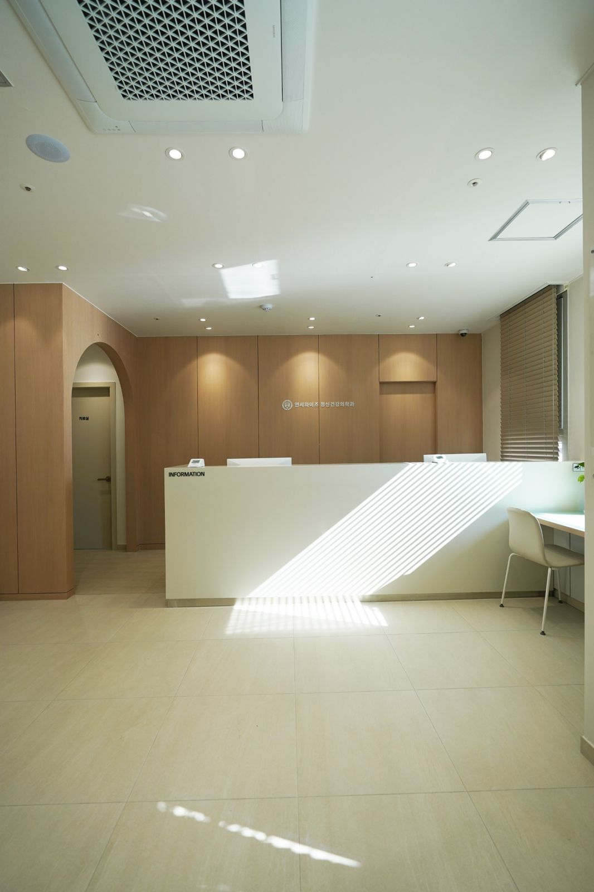
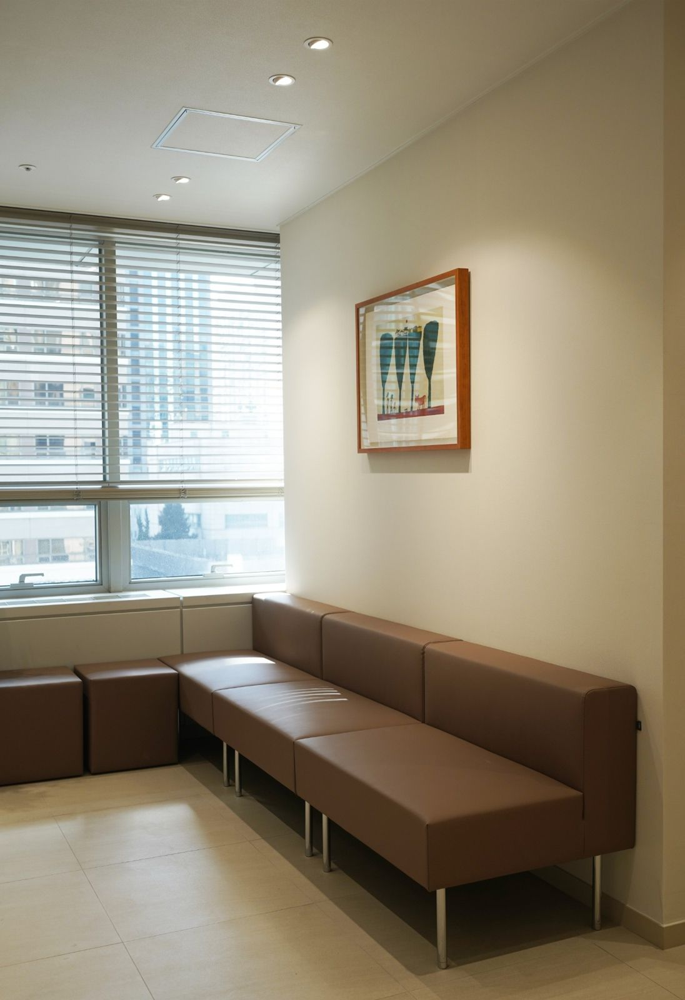
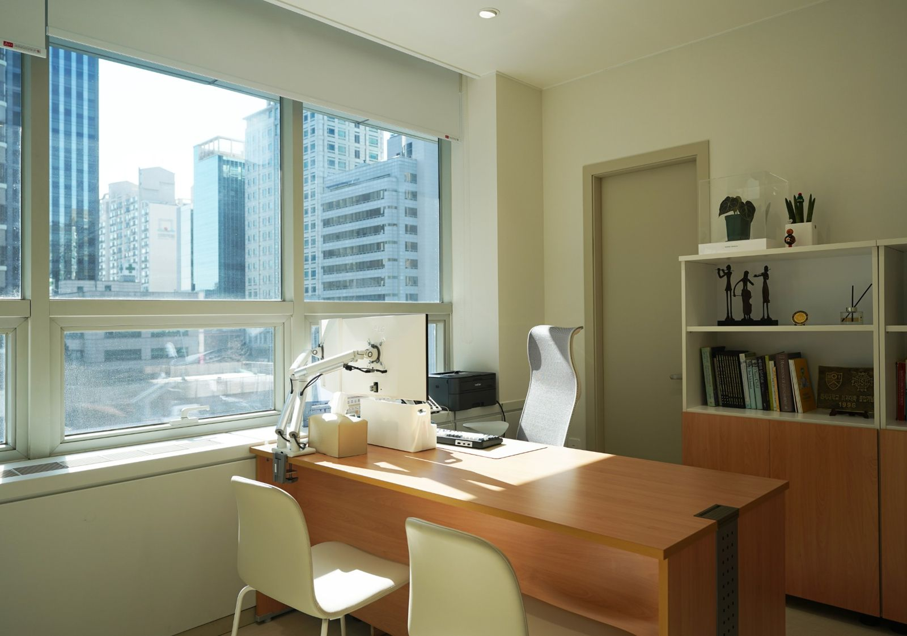
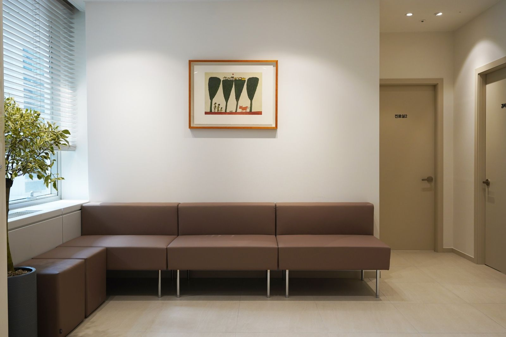
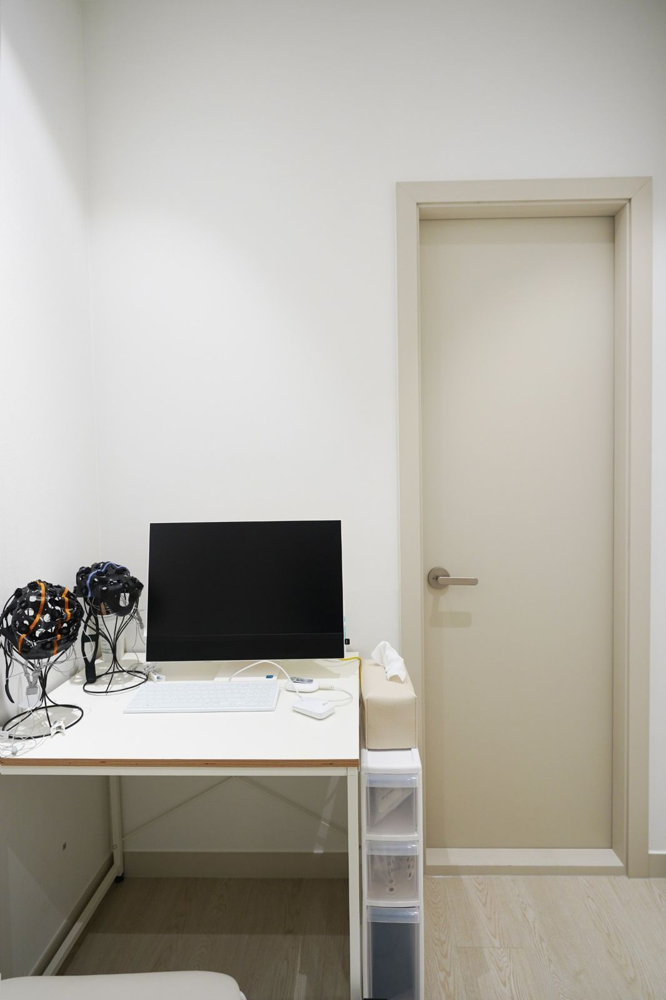
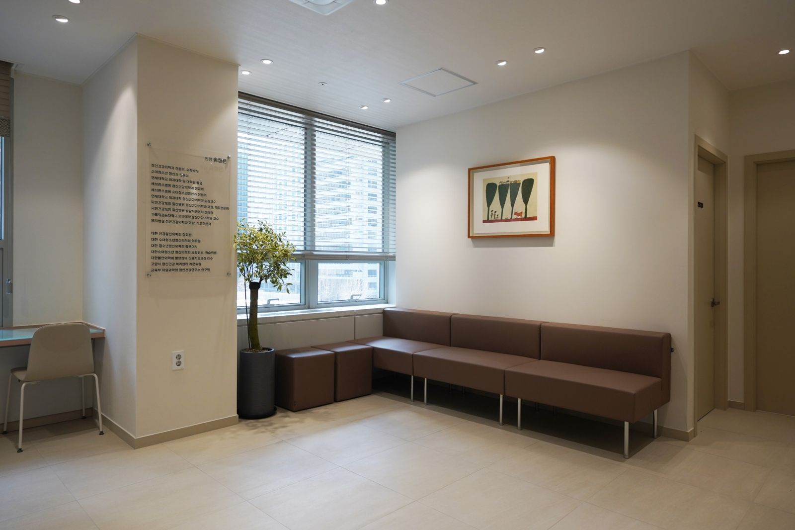

송정은 원장
- 정신건강의학과 전문의
- 의학박사
- 소아청소년정신건강의학과 분과 전문의
학력 및 경력
- 연세대학교 의과대학 및 대학원 졸업
- 세브란스병원 정신건강의학과 전공의
- 세브란스병원 소아청소년정신과 전임의
- 강북삼성병원 소아청소년정신과 전임의
- 연세대학교 의과대학 정신건강의학과 임상교수
- 국민건강보험 일산병원 정신건강의학과 과장, 지도전문의
- 국민건강보험 일산병원 발달지연센터
- 가톨릭관동대학교 의과대학 정신건강의학과 조교수
- 명지병원 정신건강의학과 과장, 지도전문의
학회 및 대외 활동
현재
- 대한신경정신의학회 정회원
- 대한소아청소년정신의학회 정회원
- 대한소아청소년정신의학회 보험위원회 위원
- 국민연금공단 자문의
이전
- 대한청소년정신의학회 총무이사
- 대한소아청소년정신의학회 학술위원
- 경기도교육청 Wee센터 자문의
- 고양시 정신건강복지센터 자문위원
- 고양시 정신건강심사위원
- 중앙약사심의위원회 전문가
- 교육부 자살과학생정신건강연구소 연구원
주요 논문
논문 목록 보기 (27편)논문 목록 닫기
- Effectiveness of a Training Program for Parents of Toddlers with or at Risk of Autism Spectrum Disorder
- Quality of Early Depression Management and Long-Term Medical Use: Aspect of Quality Indicators for Outpatients with Depression
- Comparison of Suicide Attempts and Suicide Deaths by Jumping from a High Place in Korean Children and Adolescents
- Investigation of Gene-Environment Interactions in Relation to Tic Severity
- Neutrophil-Lymphocyte Ratio as Inflammatory Marker for Delirium: An Exploratory Study
- Characteristics of First Visit Pediatric Patients with Suicidal Ideation and Behavior: An 8-Year Retrospective Chart Review
- Clinical Characteristics of Developmentally Delayed Children Based on Interdisciplinary Evaluation
- Long-Term Cognitive, Executive, and Behavioral Outcomes of Moderate and Late Preterm at School Age
- Influence of Area-Level Characteristics on the Suicide Rate in Korean Adolescents
- Investigation of Previously Implicated Genetic Variants in Chronic Tic Disorders: A Transmission Disequilibrium Test Approach
- Clinical Psychological Assessment Profile of Psychiatric Outpatients Who Complain of Symptoms of Neuroscience: K-WAIS-IV and MMPI-2
- Cross-Cultural Aspect of Behavior Assessment System for Children-2, Parent Rating Scale-Child: Standardization in Korean Children
- De Novo Coding Variants Are Strongly Associated with Tourette Disorder
- Longitudinal Follow-up Study of Children with Developmental Delay: Single Center Experience
- Pre- and Perinatal Complications in Relation to Tourette Syndrome and Co-occurring Obsessive-Compulsive Disorder and ADHD
- The Social Responsiveness Scale in Relation to DSM-IV and DSM-5 ASD in Korean Children
- Predictors of Suicide Attempts in Clinically Depressed Korean Adolescents
- The Structure of Co-occurring Bullying Experiences and Associations with Suicidal Behaviors in Korean Adolescents
- Association between Defense Mechanisms and Psychiatric Symptoms in the Korean Refugees
- Risky Behavior Subtypes and Suicide Attempts in Adolescents with Depression
- The Tourette International Collaborative Genetics Study, Finding the Genes Causing Tourette Syndrome: Objectives and Methods
- The Influence of Unsupervised Time on Elementary School Children at High Risk for Inattention and Problem Behaviors
- The Differences in Clinical Aspect between Specific Language Impairment and Global Developmental Delay
- Association of Norepinephrine Transporter Gene and Side Effects of OROS Methylphenidate in Attention-Deficit Hyperactivity Disorder
- Association of SNAP-25, SLC6A2, and LPHN3 with OROS Methylphenidate
- Norepinephrine Transporter Gene (SLC6A2) Is Involved with Methylphenidate Response in Korean Children with ADHD
- The 1287 G/A Polymorphism of the Norepinephrine Transporter Gene (NET) Is Involved in Commission Errors in Korean Children with ADHD
병원 둘러보기









진료 시간
- 토요일은 점심시간 없이 진료합니다.
- 목요일 · 일요일 · 공휴일은 휴진입니다.
| 월요일 | 10:30 ~ 19:00 |
|---|---|
| 화요일 | 10:30 ~ 19:00 |
| 수요일 | 10:30 ~ 19:00 |
| 목요일 | 휴진 |
| 금요일 | 10:30 ~ 19:00 |
| 토요일 | 10:00 ~ 14:00 점심시간 없음 |
| 일요일 · 공휴일 | 휴진 |
점심시간
13:30 ~ 14:30